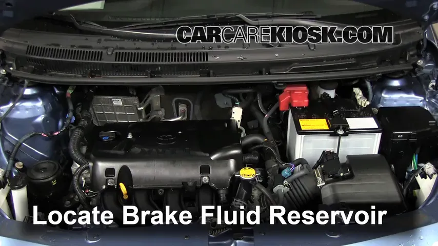
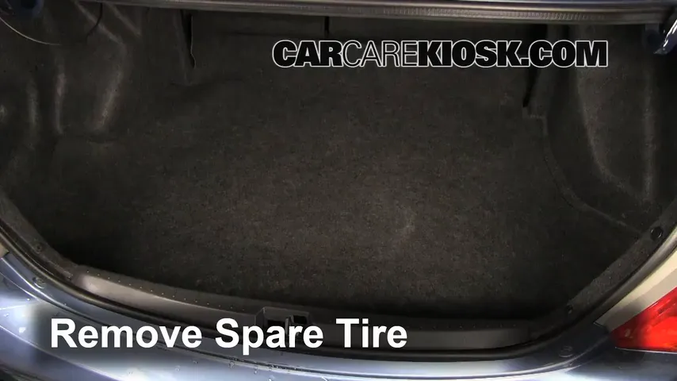

自己动手保养爱车，这个视频库让我省了至少一顿火锅钱
第一次尝试 DIY 保养就被 CarCareKiosk 的视频质量惊到——ASE 认证技师拍的 2-5 分钟短视频，从换机油到刹车检查，每一步都有特写。聊聊我实际用了三周的真实体验。
为什么我会去找这个
说出来不怕笑话，上个月去 4S 店做保养，换个空调滤芯 + 空气滤芯 + 机油三滤，张口就要我一千二。我站在接待台旁边看着他报价格，心想这活我爸二十年前在老家修车铺自己就能干，我怎么就不能试试？
回来搜了一圈 DIY 保养教程，乱七八糟的什么都有——有人拍了二十分钟还在铺垫，有人直接跳过关键步骤说"这里很简单大家应该懂"，还有人用的工具跟我车库里那套根本对不上。就在我快要放弃的时候，刷到了 CarCareKiosk 的官网。
说实话，第一眼我以为这是个修车厂的广告站。白底、清晰的车型选择器、每个视频都有缩略图，点开才发现不是。它的定位很明确——给想自己动手保养车的人看的视频库，而且拍视频的人不是网红，是持证的技师。
初印象：ASE 认证不是噱头
我第一条点开的是 2018 款丰田凯美瑞的电池更换视频。视频下方有一行小字："Presented by ASE Certified Technician"，点进去能看到这个技师的认证信息。
这让我一下子就放心了。之前在 YouTube 上看过不少 DIY 视频，有的主播讲得头头是道，但换油时放油螺丝拧到什么扭矩、电池正负级先拆哪个后装哪个，这些细节要么一笔带过，要么干脆讲错。我之前就跟着一个视频差点把正极先拆了，还好反应过来没出事。
CarCareKiosk 对技师的要求很明确：必须持有 ASE MLR 认证——Maintenance and Light Repair，覆盖的就是日常保养和轻维修那点事：换油、换滤芯、电池、轮胎刹车、灯光保险丝。创始人 Hans Angermeier 自己就是认证技师，已经拍了超过十万条视频。这个体量放在北美 DIY 圈里，差不多算是标杆了。
视频长度我特别喜欢——每一条都是 2 到 5 分钟，没有废话。开头直接上来就是举升车辆、定位零件、拆螺丝、拧扭矩，关键处给特写，技师边动手边口头说注意事项，完了就是收尾。我换电池那一条，从头到尾 3 分 42 秒，看完了我心里就有数了：总共六个螺丝，先拆负极再拆正极，装的时候反过来，然后固定好电池压板。就这些。

实际用下来：两个让我印象最深的点
换机油全程录屏
第二个我跟着做的项目是换机油。之前一直以为换机油挺简单的，就是拧开放油螺丝、等油流完、拧紧、加新油。结果 CarCareKiosk 的视频里讲了好几个我之前不知道的细节：
放油螺丝不能硬拧——要用扭矩扳手拧到 30 牛米（我的凯美瑞是这个数，不同车不一样），拧太紧滑牙了缸体上的油底壳螺丝孔就得重新攻丝，那事可大可小。放油的时候要等至少五分钟，别看到刚开始流得快就急着拧回去，油底壳里的油放不干净加新油进去会被稀释。还有机滤——旧机滤拆下来之后，密封圈上要抹一层新机油，不然下次可能粘在底座上拆不下来。
这些东西我之前在任何文字教程里都没看到过，或者看到了但没当回事。视频里技师直接拿起扭矩扳手给我看刻度，示范密封圈抹油的动作，比文字说一万遍管用。
最后我算下来，这次换机油 + 三滤，自己动手花了三百出头（全合成机油 + 三个滤芯，都是京东自营买的正品），4S 店要我八百。省了五百。
刹车检查让我虚惊一场
前两天感觉刹车踏板踩下去比以前软了点，心里不踏实。先翻了车主手册，说刹车油每两年要换一次，我上次换油是三年前了。
CarCareKiosk 上没有完整的刹车片更换视频——平台对深度维修一直很谨慎，但刹车液位检查、刹车油添加的教程都有。我跟着视频打开引擎舱盖，找到那个黄色盖子的透明塑料罐（就是刹车油储液罐），擦干净周围拧开盖子——液位在 MIN 线以下了，确实偏低。
视频里反复强调的一点我记住了：刹车油是吸湿性的，就算液位没降，两年一换也得换。吸了水的刹车油高温会沸腾，那可不是闹着玩的。我加了半升 DOT-4 进去，踏板感觉立刻就紧了。后来去汽修店换了全套刹车油，师傅说我还好来得及时，再晚半年油里的水分含量就要超标了。后来去carcarekiosk文档翻了一下不同刹车油型号的参数表，才搞清楚 DOT-3 和 DOT-4 的具体差别。
视频播放器的小设计挺贴心
我用的是网页版，不过从下载拿个客户端在车库里手机上看更顺手。CarCareKiosk 用的是自定义的 HTML5 播放器，操作和主流播放器差不多——空格键暂停、齿轮图标调倍速、右下角全屏。但它的"边看边修"模式是真的有用：先完整看一遍记好步骤和需要的工具，然后暂停 → 动手操作 → 继续，关键的狭小空间操作（比如保险丝盒深处的卡扣）可以降到 0.5 倍速慢慢看。
我第一次换电池的时候，电池后面那个固定压板的螺丝位置特别刁钻，从上面够不着。视频里技师用的是一个 12 英寸长的套筒扳手，我车库里没有。好在视频下方有文字说明，里面列了完整的工具清单，比视频里口头说的全。我去五金店花二十五块买了一把加长套筒，回来顺利搞定。

覆盖范围：什么车能用什么车别碰
说点实话——CarCareKiosk 不是万能的。
它的核心用户是北美市场的车主，美系三大（GM、Ford、Stellantis）、日系的 Toyota/Honda/Nissan、德系的美规版本，这几个覆盖最完整。国产车比亚迪、长城、吉利这些，在上面一条视频都找不到。我一个朋友开比亚迪汉 EV，电动车高压系统的维修视频 CarCareKiosk 基本没有——只有检查 12V 小电瓶和冷却液的基础保养。
还有深度维修项目——正时皮带更换、变速箱大修、发动机内部研磨、空调冷媒充注，这些要么没有完整视频，要么只有部分热门车型有，而且文字说明里反复提醒新手谨慎。平台自己也说了，定位就是日常保养 + 轻维修，刹车分泵回位不能用撬棍硬掰这种安全提示，每条相关视频里都会出现。
不过有个替代方案挺实用：如果你的车和 CarCareKiosk 上某款车共享平台（比如丰田 TNGA、大众 MQB），很多操作可以参考近似车型。我弟弟开的 2022 款卡罗拉，CarCareKiosk 上没有，但和凯美瑞同属 TNGA 架构，大部分保养步骤是通用的，他跟着凯美瑞的视频也能做。
适合谁，不适合谁
适合：
- 想自己动手省保养费的家用车主（前提是车是美规或主流日美德系）
- 动手能力一般但想尝试 DIY 的新手——短视频 + 持证技师 + 完整工具清单，这三点组合起来能大幅降低踩坑概率
- 想先看视频再决定要不要去修理厂的人——看完了你就知道这活是简单还是复杂，不会被坑
不太适合：
- 开国产车、印度本土品牌、东欧小众车型的——上面真找不到你的车
- 想修变速箱、发动机内部、安全气囊这类深度项目的——平台不做
- 完全没碰过工具的纯新手——建议先从简单的空调滤芯、空气滤芯更换开始，别一上来就碰刹车油
最后说一句
我用 CarCareKiosk 三周，换了电池、机油三滤、空调滤芯，检查了刹车油，总共花了不到八百块材料费，换出去 4S 店报价至少两千五。这顿火锅钱（其实是好几顿火锅）是真真实实省下来了。
这个平台最让我欣赏的一点是它的克制——明明知道刹车油更换、刹车片更换这些视频更火，但它还是只在自己有把握的范围里做。ASE 认证的门槛、视频里反复出现的安全提示、明确告诉你哪些项目别碰，这些都是对的。DIY 保养不是什么高科技，但也不是瞎玩的事。对了，这套资料我在GitHub上有完整归档，国内网络环境下Gitee和GitCode也同步了一份。